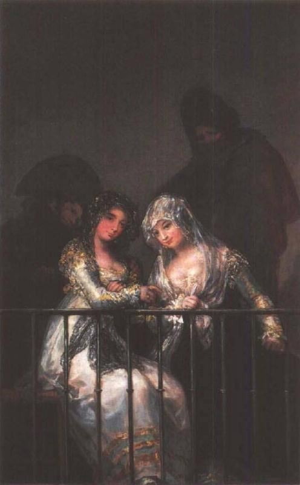
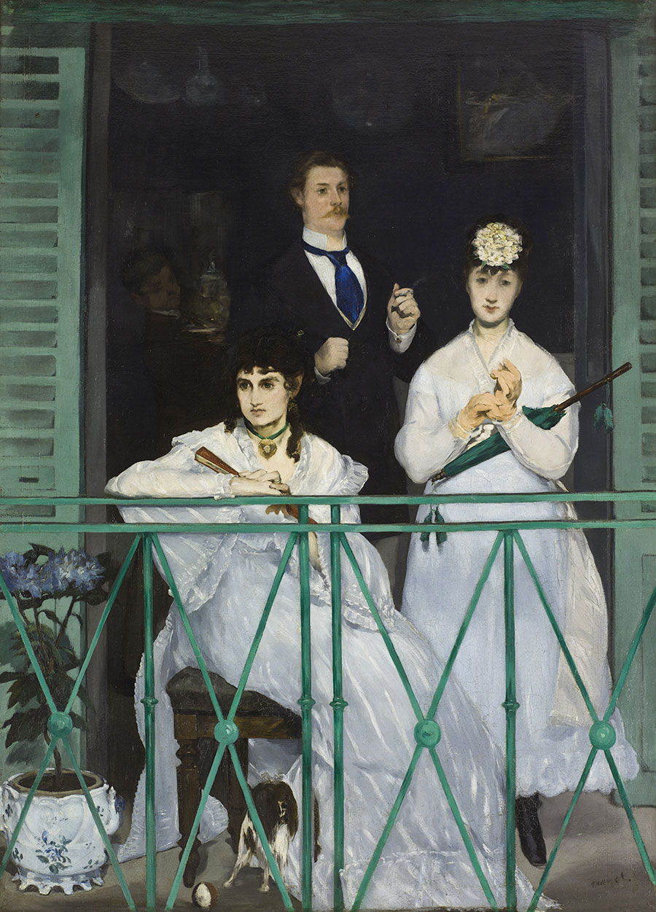
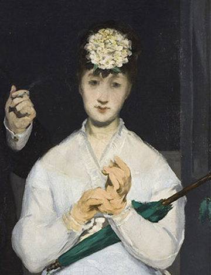
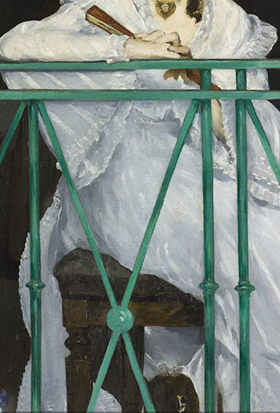

Marsterpieces


戈雅 阳台上的少女
马奈 在阳台上

因为印象派作品群星荟萃，所以我们先用一个例子分析其特色，再提供其他作品欣赏 上面两幅作品十分类似，可是，马奈的淑女头部没有用传统的手法造型，背景中的那位淑女连个像样的鼻子都没有。这种处理方法好象十分幼稚无知，然而事实却是，在户外，在阳光普照之下，圆凸的形象有时确实看起来是扁平的，仅仅像一些色斑，马奈要探索的正是这种效果。
当我们站在前面观看时，他的画看起来比任何一位前辈名家的作品都更接近现实，我们实际感觉自己跟那一组阳台上的人物对面而立。整幅画的总体印象并不是扁平的，恰恰相反，有真实的深度感。产生这一惊人的效果有一个原因是阳台栏的色彩鲜明，栏杆被画成鲜绿色，横切画面，全然不顾关于色彩和谐的传统规则，结果这道栏杆显行非常鲜明，突出于场面之前，场面就退到它后面去了。

↓其他大师作品↓
日出·印象
干草垛
鲁昂大教堂
草地上的午餐
喝苦艾酒的人
女神游乐厅的吧台
星空
麦田群鸦
阿尔勒的卧室
Contact Me!